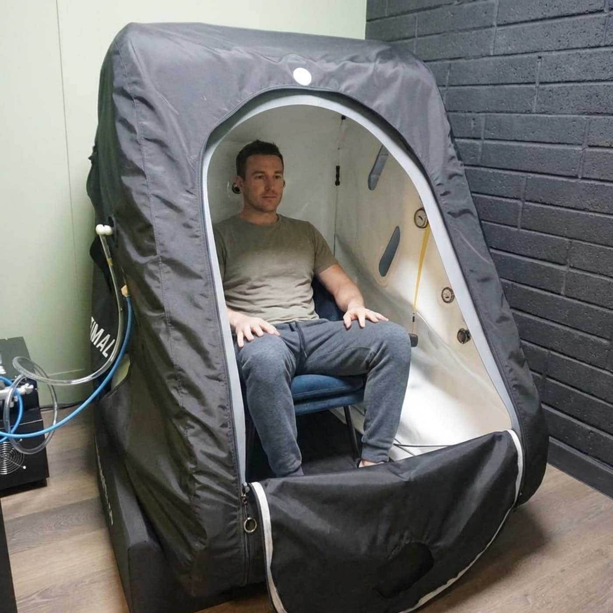

Long working weeks, sleep gone off, stiffness that has quietly become normal. Most of the people who come in are not athletes, and none of this asks much of you.
They are working long weeks. They are sleeping badly, or sleeping the whole night and getting up tired anyway. They are stiff in the morning in a way that arrived so gradually it now counts as normal, and their energy runs out somewhere around four in the afternoon. A fair number are coming back after a stretch of doing very little, and have found that starting again is harder than stopping was.
None of that has to have a name before it is worth doing something about. You do not need a diagnosis to book a session here, and nobody is going to ask you for one.
What we run is recovery: guided sessions that support circulation, rest and the body's own repair, in a room built to be calm. It is not medical care. We do not diagnose anything and we do not claim to resolve anything, and if something has been going on a while or is getting worse, your GP comes before we do. That is not us being careful with words — it is the right order to do things in.

Most people arrive with one thing they would like to be different, and that is enough to pick a starting point. This is how we usually match them up. It is a starting point rather than a prescription, and nothing stops you trying a different one next week.

Deep, gentle warmth from red and near-infrared light. Supports muscle release, joint comfort, circulation and winding down at the end of a day. Twelve minutes on the bed, in your own clothes, and most people book it for the evening.

You sit in a pressurised chamber breathing air with more oxygen in it than the room has. Supports steady energy, a clearer head and day-to-day recovery. Forty-five to sixty minutes, and most people rest or doze through it.

You sit on the chair fully clothed and a focused magnetic field works the muscle underneath you, the pelvic floor included. Supports engagement, everyday movement and hips that have stiffened up. Twenty to thirty minutes.

Hands-on work from clinical therapists: therapeutic massage, reflexology and lymphatic drainage. Supports the release of held tension, circulation and rest. Thirty to sixty minutes, depending which one you book.
There is no right moment for this, and nobody here is going to tell you that you have left it too late. These are simply the five that come up most often.
01
After a stretch of long weeks.
The deadline has gone by, or the busy season at work has, and you are still running on whatever got you through it. This is the point at which a fortnight of actual sessions is worth a good deal more than a fortnight of meaning to book one.
02
When sleep has gone off.
Not every night. Just enough of them that you have noticed. Most people try the infrared bed in the evening for this, because it is twelve minutes, it asks nothing of you, and it is easy to do at the end of a day when nothing else is.
03
Coming back after time off.
After a spell of doing very little, for whatever reason, starting again is harder than stopping was. A session either side of the first few weeks back is the common pattern here, on the grounds that what the next morning feels like is usually what decides whether anybody goes a second time.
04
Alongside a training habit you want to keep.
Most people do not give up training because it stopped working. They give up because everything aches and the week got too full. Infrared, hyperbaric oxygen and bodywork add no training load of their own, so they sit on any day you like; the chair is muscle work, so we place that one the way you would place a session in the gym.
05
When everything is fine and you would like it to stay that way.
The least dramatic reason, and the best one. Sleep, energy and how easily you move are a great deal easier to keep than to get back, and this is what keeping them looks like: an hour in the week, in the diary, like anything else you intend to actually do.
Whichever fits the thing you came in about. Sleep and winding down usually means infrared; energy and a clear head, the hyperbaric chamber; a back and hips that have been at a desk all week, the chair; tension you would rather somebody put their hands on, a massage.
If none of that quite describes it, ring us on 083 867 2844 and say what your week looks like. We will tell you honestly which one we would put you in, including when the answer is that we would not put you in any of them.
No, and most people do not. There is no diagnosis to bring, no referral and no letter. Tell us what you would like to be different and we will work from that.
If you are already under a clinician for something, do say so — not because it changes what we run, but because each of these therapies has its own safety questions we have to ask before you sit in it. Those are set out in plain words on each therapy's own page, and we would rather you read them before you book than find out at the desk.
No. What we run here is wellness: comfort, rest, circulation, movement and everyday energy. We do not diagnose anything, we do not claim to resolve anything, and nothing here replaces your GP or the advice of somebody already looking after you.
If something is new, persistent, or getting worse, see your GP first. We would far rather say that plainly than have you spend money here instead.
No. You sit or lie down for all four of them, in the clothes you arrived in, and none of them ask you to exert yourself. People in their seventies use the clinic, and so do people who have not exercised in years.
If you are wondering whether you might be too unfit, too old or too out of practice for this, you are the person it was built for.
It depends which one and on what you are after. As a rough shape, people tend to start with one or two hyperbaric sessions a week, or two or three infrared, or two or three on the chair, for the first few weeks, and then settle into whatever fits the diary. Massage sits wherever you want it.
Most of this is judged over a run of sessions rather than over one, and we would rather say so before you book than afterwards. Start with a single session all the same: it tells you whether you get on with the thing, which is the question a block cannot answer.
Yes, and most regulars do. A common week is hyperbaric oxygen in the morning for a clear head and infrared in the evening for wind-down and sleep, with the chair or a massage placed where they suit you. Tell us what your week looks like and we will space them sensibly.
Getting started
A single session will tell you more than this page can. There is no obligation to buy a block afterwards and nobody here will push you towards one. If you would rather talk it through first, ring 083 867 2844 and say what you are hoping for — we will be straight with you about whether we think it suits.